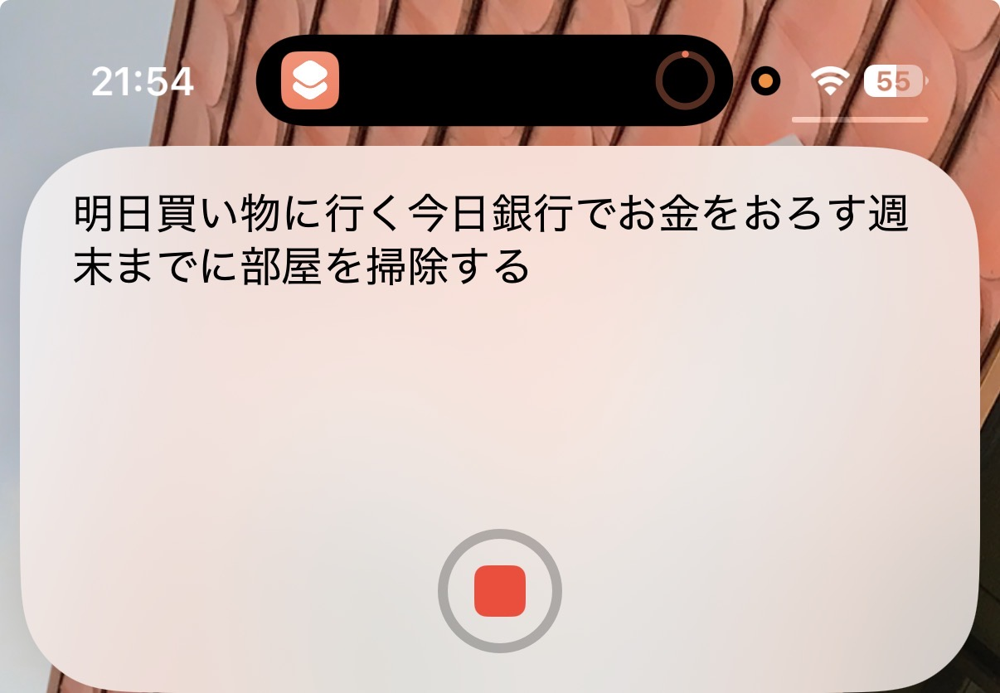
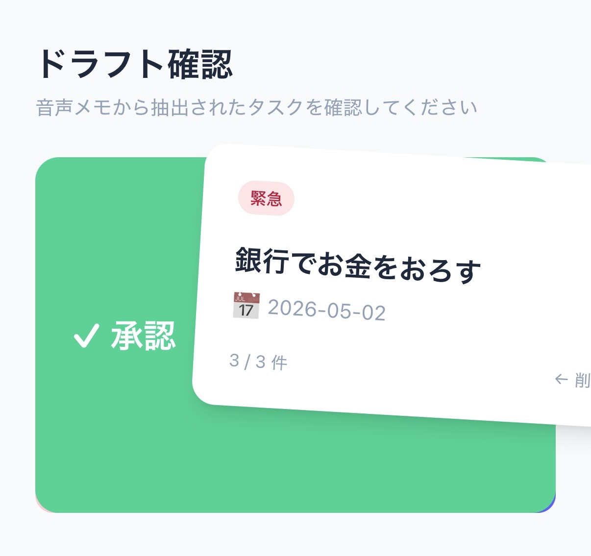

音声メモ → タスク管理 PWA を作った
音声メモの書き起こしから Claude AI でタスクを自動抽出し、スマホのホーム画面から使える PWA として仕上げるまでの記録。FastAPI + React + Cloudflare の構成でゼロから作った。
作った背景
iPhone 17 に買い替えたことで アクションボタン が使えるようになった。「家でふと思ったことをアクションボタン長押しで音声入力してタスクに残せたら便利」と考え、まず Todoist の音声入力機能（Ramble）を試してみた。
しかし、無料プランでは月 10 回までしか使えない制限がある。Pro プランにすれば無制限になるが、料金は 月払い $7/月、年払いでも $5/月（年額 $60）（2025年12月の値上げ後）。音声入力のためだけにこれを払うのは割高に感じた。
そもそも音声メモをそこまで高頻度で使うかというと、そうでもない。それなら 自分で作ってしまえばいい という発想に至った。
システム構成
graph TB
subgraph iPhone
SC[Shortcuts アプリ]
PWA[PWA ホーム画面]
end
subgraph Cloudflare
Pages[Cloudflare Pages<br/>React PWA]
Worker[Cloudflare Worker<br/>BFF プロキシ]
Tunnel[Cloudflare Tunnel]
end
subgraph 自宅サーバー
API[FastAPI<br/>uvicorn + systemd]
end
subgraph 外部サービス
Claude[Anthropic API<br/>claude-sonnet-4-6]
SB[(Supabase<br/>tasks テーブル)]
end
PWA --> Pages
Pages -->|リクエスト| Worker
Worker -->|Bearer Token| Tunnel
Tunnel --> API
SC -->|Bearer Token| Tunnel
API -->|タスク抽出| Claude
API -->|読み書き| SBバックエンド構成
FastAPI（Python）+ Supabase + Anthropic API の構成。全ロジックを main.py 1ファイルに収めるシンプルな設計。
エンドポイント
| エンドポイント | 用途 |
|---|---|
POST /extract-tasks |
音声メモのテキストから Claude でタスクを抽出 → Supabase に draft で保存 |
GET /tasks?status= |
タスク一覧取得（status フィルタ） |
PATCH /tasks/{id} |
タスク更新（承認・編集・完了） |
DELETE /tasks/{id} |
タスク削除 |
GET /health |
死活確認 |
タスク抽出の仕組み
音声メモのテキスト
↓
Claude API にプロンプトで投げる（今日の日付付き）
↓
JSON 配列として返ってくる（title / priority / due_date 等）
↓
Supabase の tasks テーブルに status=draft で INSERT
Claude のレスポンスがコードブロックで包まれることがあるため、マークダウン除去の処理を入れている。
認証
HTTPBearer でトークンを受け取り、secrets.compare_digest() でタイミング攻撃対策をして比較する。/health のみ認証不要。
Supabase のスキーマ
create table tasks (
id uuid primary key default gen_random_uuid(),
user_id uuid not null references auth.users(id),
title text not null,
body text,
status text check (status in ('draft', 'todo', 'done')) default 'draft',
priority integer check (priority between 1 and 4) default 3,
due_date date,
source text check (source in ('voice', 'manual')) default 'manual',
created_at timestamptz default now(),
updated_at timestamptz default now()
);
service_role キーで Supabase クライアントを生成し RLS をバイパス。user_id フィルタはアプリ側（USER_ID 環境変数）で担保。
フロントエンド構成
Vite + React + TypeScript + Tailwind CSS v4 の構成。react-swipeable でスワイプジェスチャーを実装し、vite-plugin-pwa で PWA 化した。
音声入力画面
FAB のマイクボタンをタップすると音声入力画面に遷移する。Web Speech API でリアルタイムに文字起こしされ、句読点なしで流れ込んできたテキストをそのまま Claude に渡す。

ドラフト確認のスワイプカード
音声メモから抽出されたタスクは draft 状態で溜まる。アプリ起動時に draft があれば確認画面を先出しして、1件ずつカード形式でレビューさせる設計にした。
- 右スワイプ →
PATCH status: todo（タスクとして追加） - 左スワイプ →
DELETE（捨てる） - スワイプ量に応じて緑/赤のオーバーレイが透けて見える視覚フィードバック付き

PWA の iOS 対応
Safari から「ホーム画面に追加」するだけでネイティブアプリ風に使えるように以下を設定した：
<meta name="apple-mobile-web-app-capable" content="yes" />
<meta name="apple-mobile-web-app-status-bar-style" content="black-translucent" />
<meta name="apple-mobile-web-app-title" content="VoiceTasks" />
<link rel="apple-touch-icon" href="/apple-touch-icon.png" />
<meta name="viewport" content="width=device-width, initial-scale=1.0, viewport-fit=cover" />
viewport-fit=cover + env(safe-area-inset-*) で Dynamic Island / ノッチ対応も入れた。
セキュリティ設計: Cloudflare Worker BFF
最初は VITE_API_TOKEN を Cloudflare Pages の環境変数に設定していたが、VITE_ プレフィックスの変数はビルド時に JS バンドルへ埋め込まれるため、ブラウザの DevTools で誰でも読める状態だった。
問題
VITE_API_TOKEN=abc123
↓ ビルド時に埋め込まれる
dist/assets/index-xxx.js: ...Bearer abc123...
↓
DevTools で丸見え → /extract-tasks を叩かれると Anthropic API 料金が発生
解決: Worker をプロキシとして挟む
sequenceDiagram
participant B as ブラウザ (pages.dev)
participant W as Cloudflare Worker
participant API as 自宅 FastAPI
B->>W: GET /tasks (Authorization なし)
W->>W: Origin: pages.dev を検証
W->>API: GET /tasks (Authorization: Bearer TOKEN)
API->>W: 200 OK + data
W->>B: 200 OK + data + CORS headersWorker は API_TOKEN をサーバーサイドの秘密環境変数として持ち、ブラウザには渡さない。JS バンドルに認証情報が一切含まれなくなる。
Worker の Origin チェック（pages.dev 以外は 403）で、ブラウザ経由の不正利用も防げる。
# トークンをコードに書かずに登録
npx wrangler secret put API_TOKEN
結果の確認方法
# バンドルにトークンが含まれていないか確認
curl -s https://voice-memo-frontend.pages.dev/assets/index-xxx.js \
| grep -c "YOUR_TOKEN" && echo "漏れあり" || echo "漏れなし"
壁打ちで得た気づき
VITE_ 変数はクライアントサイドに丸見え
「環境変数 = 秘密」と思いがちだが、Vite の VITE_ プレフィックスはビルド時に静的に置換されてバンドルに埋め込まれる。バックエンドの環境変数とは全く別物。フロントエンドに秘密を持たせてはいけない。
BFF（Backend For Frontend）パターンの実用性
Cloudflare Worker が軽量な BFF として機能する。認証情報の隠蔽・CORS 制御・Origin 検証を数十行で実現できる。インフラのオーバーヘッドがほぼゼロで導入できるのが強み。
個人用アプリのセキュリティの考え方
完璧なセキュリティより「リスクと対策のバランス」が重要。今回の構成では：
- トークンが漏れても user_id フィルタでデータは守られる
- Worker で extract-tasks へのアクセスをブラウザ経由に限定できる
- iPhone Shortcuts のトークンは端末内に閉じている
PWA と通知
iOS の PWA は Web Push 通知が制限されていて、ネイティブアプリのような通知体験は難しい。今回はひとまず通知なしで割り切り、Shortcuts でのメモ作成フローに集中した。
今後の展望
必要最低限の機能は実装できたので、いったんここで一区切り。時間ができたら サブタスク対応 を実装したい。
Todoist の音声入力（Ramble）ではサブタスクを追加できない。例えば「買い物する」というタスクの中に、「卵」「牛乳」「野菜」といった買う物をサブタスクとして紐づけるようなことができない。音声メモのテキストから Claude がタスクを抽出するこの仕組みなら、階層構造を解釈してサブタスクまで生成することができるはず。実現できれば機能面でも Todoist 無料プランを超えられる。
リポジトリ
| リポジトリ | 内容 |
|---|---|
| voice-memo | FastAPI バックエンド |
| voice-memo-frontend | React PWA フロントエンド |